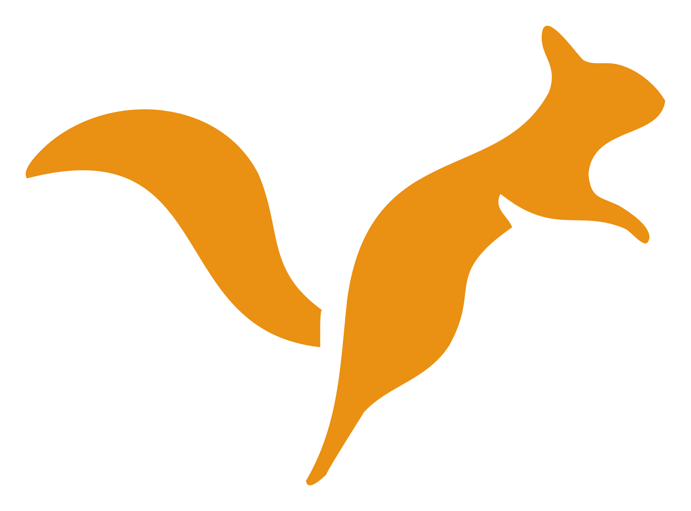

01 — Cover
Diskusi bulanan
Residu GNSS: apa artinya?
Tiga hal yang sering salah dibaca dari laporan pengolahan baseline.
Swipe →
1 / 5
02 — Content
Residu GNSS
2 / 5
01
Residu kecil bukan berarti hasilnya benar.
Kalau semua baseline diikat ke satu titik yang salah, residunya tetap rapi — kesalahannya cuma pindah ke datum.
Tangkapan layar hasil pengolahan baseline
03 — Quote

“Angka yang tidak bisa ditelaah ulang bukan data — itu klaim.”
KP
Koordinator pelatihan
Bumi Kala Charta
04 — Event
Pendaftaran dibuka
Kelas Fotogrametri Drone
Sabtu, 19 September · 09.00–16.00
Bandung & daring
Mentor: tim fotogrametri BKC
12 kursi tersisa — daftar sekarang
05 — Save / closing
Residu GNSS
5 / 5
Save
biar ga lupa
Diskusi lengkapnya tiap awal bulan — gratis untuk anggota komunitas.